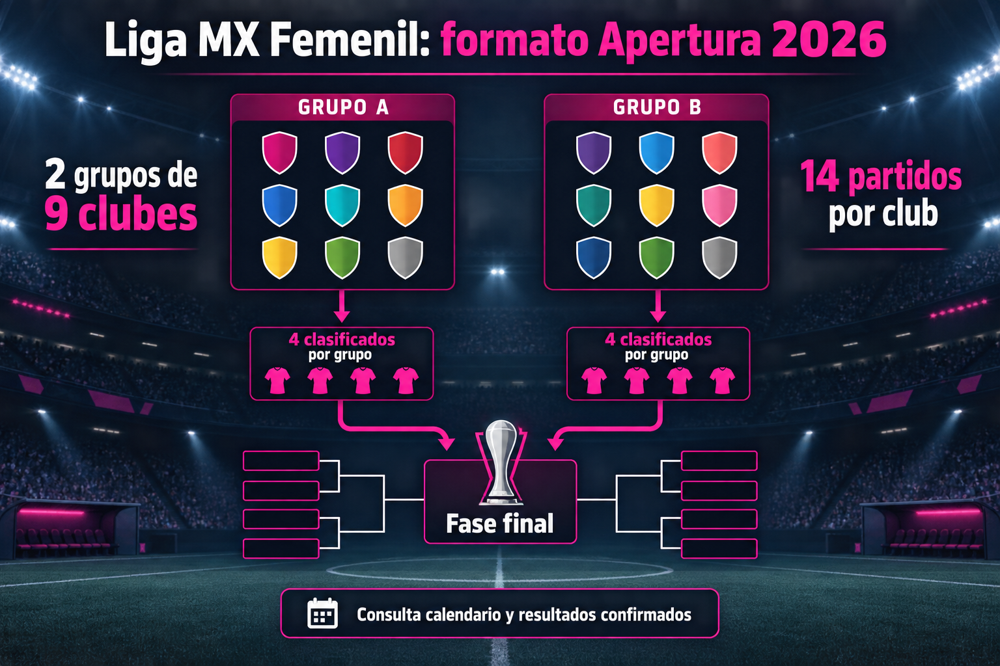

¿Qué es la Liga MX Femenil?
La Liga MX Femenil es la principal competencia profesional de clubes femeninos en México. Su creación consolidó una estructura nacional regular, amplió la visibilidad de las jugadoras y permitió seguir el fútbol mexicano femenino durante todo el año.
Cómo se disputa la temporada
La temporada se organiza en torneos cortos. En el Apertura 2026, la fase regular se divide en dos grupos de nueve clubes y los cuatro mejores de cada grupo avanzan a la fase final. Cada equipo tiene 14 partidos programados: ocho dentro de su sector y seis intergrupales.
Este sistema reemplaza la clasificación de ocho equipos desde una tabla única que se utilizó en temporadas anteriores. Los cruces, horarios y criterios de desempate deben confirmarse siempre en el reglamento de la edición correspondiente.
Cómo leer la tabla de posiciones
La tabla de posiciones de Liga MX Femenil debe leerse por grupo en el formato actual. No basta con comparar una posición de temporadas con tabla única: la clasificación depende del sector de cada club y de los resultados confirmados de la fase regular.
Para revisar qué provocó un cambio, consulta los resultados femeniles. El calendario y la página de partidos sirven para ubicar los siguientes encuentros sin mezclar programación con marcadores ya cerrados.
Equipos y rivalidades
Participan representativos femeniles vinculados a clubes del máximo circuito. El crecimiento de los proyectos deportivos ha impulsado rivalidades nacionales y regionales, además de una conversación más amplia sobre fuerzas básicas, desarrollo de jugadoras y condiciones de competencia.
Entre las consultas más habituales están cuándo juega América Femenil y cuándo juega Chivas Femenil. Estas fichas complementan la guía general con el contexto de cada club.
Por qué es importante la competencia
La liga abrió oportunidades para futbolistas, entrenadoras y árbitras, y favoreció que más encuentros llegaran a televisión y plataformas digitales. Más allá de una jornada concreta, la competencia ofrece un calendario propio, una fase regular identificable y una ruta al título que cambia según el reglamento vigente.
De la fase regular a la final
Tras la fase regular, los ocho clasificados disputan la eliminación directa. Consulta los formatos de cuartos de final, semifinales y las campeonas recientes para seguir la ruta de cada ronda.
Calendario, resultados y tabla de goleo
Cada página responde una intención distinta: la tabla explica posiciones, el calendario anticipa fechas, los resultados registran marcadores confirmados y la tabla de goleo sigue el rendimiento individual. Separar estos datos facilita encontrar la información correcta y evita presentar una previsión como un resultado oficial.
Cómo se actualiza esta guía
Esta página es editorial y se revisa cuando existe información confirmada. Antes de asistir a un encuentro o seguir una transmisión, verifica hora, sede y cambios en los canales oficiales del club o de la competencia.